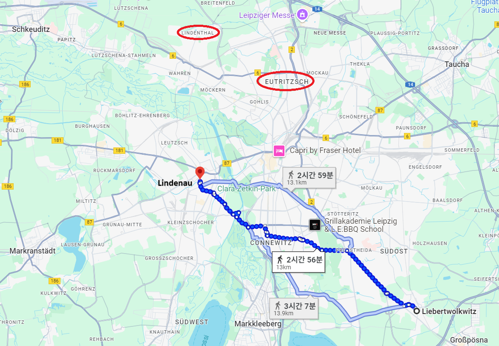
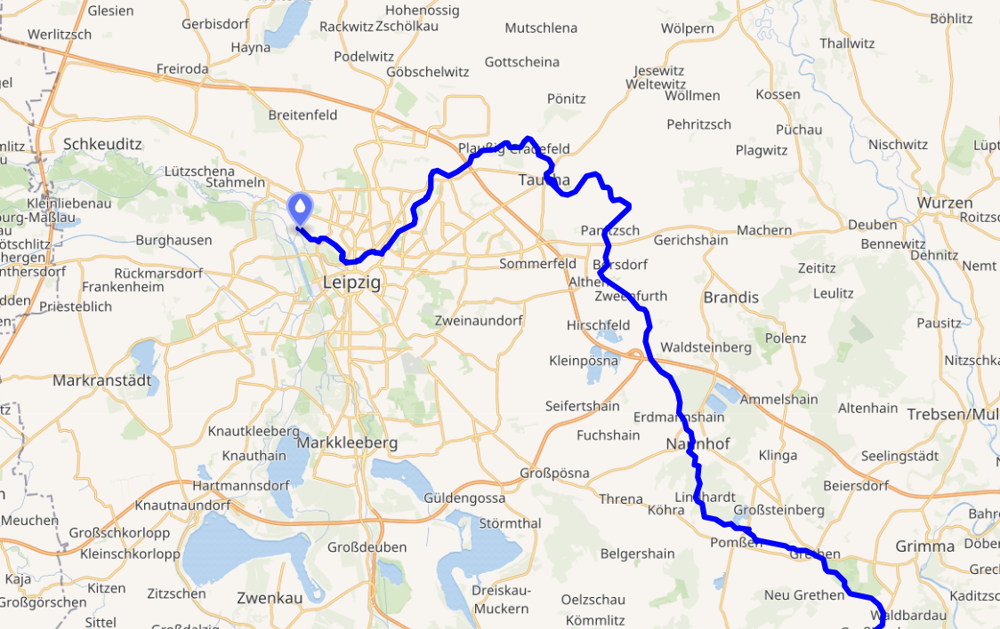
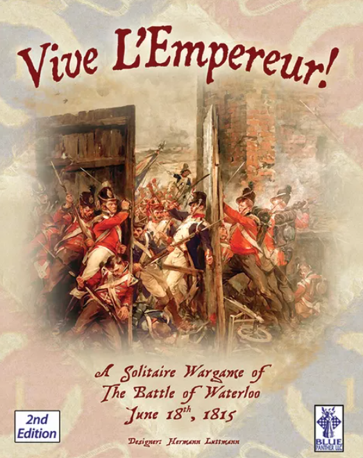
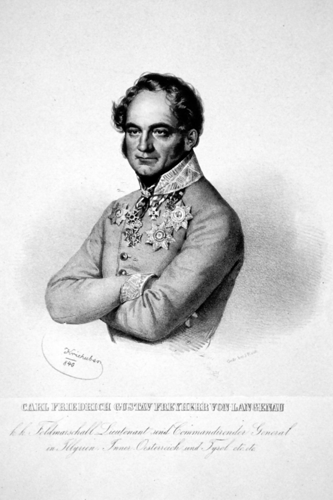

라이프치히 전투 (6) - 나폴레옹의 믿는 구석
게시: 2025-06-30T06:30:38+09:00
마르몽은 자기가 콩으로 메주를 쑨다고 해도 믿어주지 않는 나폴레옹에 대해 너무나 분통이 터졌습니다. 그러나 나폴레옹이 린덴탈 현장 상황을 직접 눈으로 보고 있는 마르몽의 말을 이렇게 철저히 무시하고 남쪽 전선으로 내려오라고 지시하는 것에는 나름대로 믿는 구석이 있었기 때문이었습니다. 이미 언급한 대로, 라이프치히 일대를 가로질러 흐르는 여러 작은 강들을 이용하여 적의 움직임을 늦추고 그랑다르메는 신속하게 이동시킬 수 있다고 자신했던 것입니다. 그런 자신감은 나폴레옹이 10월 16일 오전 7시에 베르티에를 거치지 않고 마르몽에게 직접 보낸 편지에서 잘 드러납니다. "적이 할러 방면으로부터 진격해온다는 조짐은 아무 것도 없네. 거기엔 기병 군단 하나뿐일 거야. 자네가 어제 보고서에서 주장한 것처럼 적 보병대대들도 있다는 말은 믿기 어려워. 오늘 아침에 정찰대가 돌아오면 좀 더 확실해지겠지. 난 오스트리아군을 공격할 건데, 내 생각엔 자네가 라이프치히 교외의 다리를 이용해서 파르터(Parthe) 강을 건너와 라이프치히와 리버트볼크비츠 사이, 시내로부터 약 2.5km 떨어진 지점에서 예비대로 대기하고 있는 것이 좋겠어. 자네 사단들은 사선 대형으로 배치해놓게. 만약 적군이 린더나우(Lindenau) 방향에서 강력한 공세를 취한다면 자네가 그쪽 방향으로 재빨리 움직일 수 있겠지만, 내 생각엔 그럴 가능성은 없어 보이네. 내가 남쪽 주전선에서 적 병력과 결전 의지를 확인하는 대로, 자네를 전투에 소환할 거야. 마지막으로, 만약 적이 정말 할러 방면에서 나타난다면 자네의 현위치에 경계 초소를 배치할 베르트랑을 지원하기 위해 자네가 달려갈 수도 있을 걸세. 하지만, 그런 일이 일어날 것 같지는 않군."

(이 지도에서 표시된 것은 리버트볼크비츠와 린더나우 사이의 거리입니다. 나폴레옹이 지정한 마르몽의 대기 위치는 리버트볼크비츠보다는 라이프치히 시내에 더 가까운 곳이었으므로, 만약 마르몽이 린더나우로 달려갈 일이 있다고 하면 2시간 이내에 이동 가능했을 것입니다. 이미 언급했지만 당시 마르몽의 위치는 린덴탈, 베르트랑의 위치는 오이트리츠쉬(Eutritzsch)였습니다.)

(파르터 강의 위치입니다. 라이프치히 북서쪽에서 '하얀 엘스터' 강과 합류합니다.)
이렇게 마르몽의 상처 입은 마음에 다시 한 번 대못을 친 나폴레옹의 아침 7시 편지에 뒤이어, 8시에 쓰여진 베르티에의 편지가 마르몽에게 도착했는데, 거기엔 마르몽의 상처에 소금을 쑤셔박는 문구가 명확히 쓰여있었습니다. 마르몽의 제6군단과 함께, 베르트랑의 제4군단 뿐만 아니라 마르몽이 자신에게 지휘권을 달라고 그토록 징징거렸던 제3군단, 그리고 다른 3개 기병 사단까지 모두 꼴보기 싫은 네의 지휘하에 둔다는 선언이었습니다. 그러면서 베르트랑은 나폴레옹의 편지에 적혀 있던 대로 파르터 강 남쪽으로 이동하되, 다만 그 이동의 실제 수행에 대해서는 네의 명령을 기다리라고 지시했습니다. 이렇게 나폴레옹의 진영에서 오해와 착각, 갈등과 원망이 난무하는 가운데, 슈바르첸베르크의 보헤미아 방면군 사령부는 하하호호 화기애애한 분위기였을까요? 물론 그렇지 않았습니다. 일단 슈바르첸베르크의 사령부에서도 나폴레옹 쪽의 병력 규모와 의도를 명확히 알지 못했습니다. 심지어 나폴레옹이 라이프치히에 도착했다는 사실조차 확실히 알지 못했고, 15일 정오 무렵 바하우(Wachau) 북쪽 언덕에서 수천 명의 적군이 'Vive l'Empereur!' (비브 렝프뢰르!, 황제폐하 만세)를 외치는 소리를 듣고서야 그의 도착을 확인하는 정도였습니다. 그 소식에 더해, 15일 저녁 무렵이 되어 그랑다르메가 리버볼크비츠 일대에 병력을 보강하고 있다는 보고를 접한 슈바르첸베르크는 그 다음날 나폴레옹이 공격해올 것이라는 것을 확신했습니다.

(우리는 WW2 때 일본군의 반자이 돌격에 대해 비웃음을 참을 수 없지만, 그 원조를 따지고 올라가다 보면 결국 나폴레옹의 비브 렝프뢰르!로 이어집니다. 물론 1800년대의 머스켓 소총탄 세례는 매우 미약했으므로, 나폴레옹 시대에는 그런 만세 돌격이 실제로 위력을 발휘했습니다. 그걸 1940년대에 7.62mm Browning 기관총 앞에서 재현하려 했다는 것이 문제였지요.)
물론 슈바르첸베르크도 그때까지 두 손 놓고 기다리고만 있었던 것은 아니었습니다. 그는 나름대로 이런저런 작전 계획을 세우고 있었으나, 확실히 나폴레옹에 비해 슈바르첸베르크의 처지가 훨씬 난처하고 어려운 것이었습니다. 거의 전체 병력이 라이프치히 일대에 모여 있어서 손쉽고 신속하게 보고를 받고 명령을 내릴 수 있던 나폴레옹에 비해, 슈바르첸베르크가 지휘해야 하는 병력에는 보헤미아 방면군 뿐만 아니라 저 멀리 할러 어딘엔가 있을 슐레지엔 방면군과 북부 방면군까지 포함되어 있기 때문이었습니다. 할러의 블뤼허와는 어렵게 편지까지 주고 받았으나, 아직 베르나도트는 어디에 있는지도 확실히 파악되지 않은 상황이다보니, 그들에게 내릴 명령도 불분명할 수 밖에 없었습니다. 또 거리가 너무 멀다보니 훨씬 더 일찌감치 명령서를 작성해서 전달해야 했는데, 당장 적의 위치와 규모는 물론 아군 베르나도트의 위치도 알지 못하는 상황에서 그게 쉬운 일이 아니었습니다. 그러다보니 블뤼허에게 전달한 그의 명령서는 매우 어정쩡했습니다. 만약 베르나도트의 북부 방면군이 (나폴레옹이 엘베강 북쪽으로 갔다는 페이크에 속아) 엘베강을 건너 북쪽으로 가버렸다면, 슐레지엔 방면군은 마르크란슈테트에 배치된 귤라이의 오스트리아군 제3군단과 합세하여 린더나우 방면을 공격할 준비를 하되, 만약 베르나도트가 라이프치히로 오는 중이라면 슐레지엔 방면군은 베르나도트와 합세하여 린덴탈 방면으로 진격하라는 것이었습니다. 그래서 15일 밤 마르몽이 슈코이디츠(Schkeuditz) 인근에서 블뤼허의 야영 모닥불을 보게 된 것입니다. 그렇다고 슈바르첸베르크 자신의 주변에 모여있는 병력들에 대한 지휘는 쉬웠느냐 하면 그것도 아니었습니다. 이건 여러 나라 군대가 모여 이루어진데다, 반갑지 않게도 그 나라들의 군주들이 직접 현장에서 참관이라는 미명하에 사사건건 지휘 체계에 간섭하고 있던 연합군 특성 때문이었습니다. 일단, 슈바르첸베르크 본인이 나폴레옹은 커녕 베르나도트 수준에도 미치지 못하는 그저 그런 지휘관에 불과했다는 점이 큰 문제를 일으켰습니다. 그는 라이프치히에서의 구체적인 작전 입안에 있어, 뜬금없게도 랑게나우(Friedrich Karl Gustav, Baron von Langenau)라는 젊은 참모 장교에게 거의 모든 것을 맡겼습니다.

(랑게나우입니다. 작센 출신이자 작센군 장교였던 그는 1813년 5월 뤼첸 전투 이후 나폴레옹의 운이 다했다고 보았는지 작센군 장교직을 사임하고 오스트리아로 넘어가 오스트리아군에 자리를 얻었습니다. 그는, 이후에도 슈바르첸베르크의 신임을 받으며 오스트리아군에서 계속 잘 복무했고, 58세의 비교적 이른 나이에 오스트리아 그라츠(Gratz)에서 사망할 때까지 잘 살았습니다.) 랑게나우가 라이프치히에서의 작전안을 맡게 된 것은 슈바르첸베르크가 그의 출신과 경험을 매우 높게 평가했기 때문이었습니다. 그는 드레스덴에서 태어난 오리지널 작센인으로서, 바로 그 해 5월 뤼첸 전투때까지만 해도 작센군의 일원으로서 나폴레옹을 위해 싸우던 사람이었습니다. 그는 1812년 러시아 원정 때는 레이니에의 제7군단에서 참모장을 맡을 정도로 나름 똑똑하고 수완있는 당시 31세의 젊은 장교로서 나폴레옹의 군대가 어떻게 생각하고 어떻게 움직이는지 매우 잘 이해하고 있었으며, 무엇보다 라이프치히 일대의 지리와 지형에 대해서는 자기 손바닥처럼 잘 알고 있다고 주장했으니, 슈바르첸베르크가 혹할 만도 했습니다. 평소 슈바르첸베르크의 두뇌 역할을 하던 라데츠키는 이 작전안에 거의 영향력을 발휘하지 못했습니다. 그런 랑게나우가 14일 밤을 새우다시피 하며 정성껏 작성한 작전안을 15일 오후에 돌려본 러시아 장군들의 반응은 어땠을까요? Source : The Life of Napoleon Bonaparte, by William Milligan Sloane Napoleon and the Struggle for Germany, by Leggiere, Michael V With Napoleon's Guns by Colonel Jean-Nicolas-Auguste Noël https://www.britannica.com/event/Napoleonic-Wars/Dispositions-for-the-autumn-campaign http://www.historyofwar.org/articles/campaign_leipzig.html https://warhistory.org/@msw/article/leipzig-battle-of-the-nations https://www.encyclopedia.com/history/encyclopedias-almanacs-transcripts-and-maps/leipzig-battle-0 https://en.wikipedia.org/wiki/Friedrich_Karl_Gustav,_Baron_von_Langenau https://en.wikipedia.org/wiki/Parthe